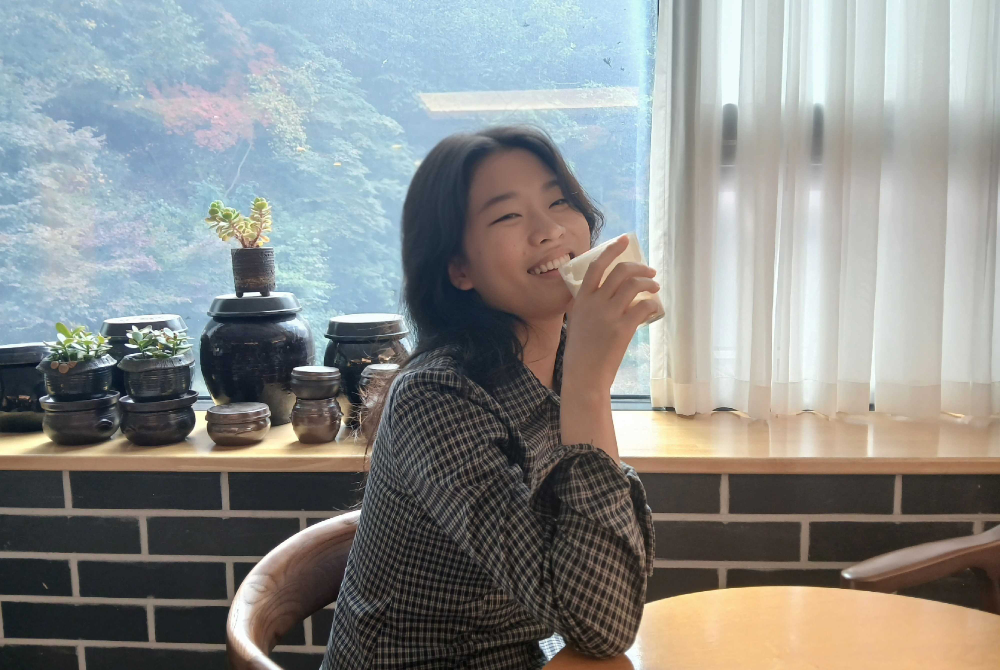

CREATIVITY
01창의력
새로운 관점과 아이디어를 구체적인 프로젝트와 화면으로 발전시킵니다.
UX/UI DESIGNER · WEB DESIGNER
영감을 현실로 만들어내는 디자이너, 김희진입니다.
사용자 문제를 이해하고 정보를 설계해 명확한 화면으로 구현합니다.
KIM HEEJIN
다양한 관심사를 팀 프로젝트와 개인 작업으로 확장하며, 새로운 관점과 아이디어를 구체화하는 창의력과 실무 능력을 키워왔습니다.
창의력
새로운 관점과 아이디어를 구체적인 프로젝트와 화면으로 발전시킵니다.
유연한 소통
다양한 관심사를 팀 프로젝트와 개인 작업으로 확장하며 생각을 나눕니다.
차분함
사용자 문제를 차분히 살피고 필요한 정보를 정리해 명확한 화면으로 구현합니다.
감각적 역량
정보의 위계와 화면 흐름을 고려해 명확하고 일관된 경험으로 구체화합니다.

ABOUT
디자인을 시작한 계기와 이전 경험에서 이어지는 강점.
실제 교육·경력·자격을 바탕으로 문제를 해결하는 방식,
협업과 피드백에 대한 태도, 앞으로의 성장 방향을 소개합니다.
TEAM PROJECT · 리뉴얼한 요소 소개
02 / 07
주요 화면과 리뉴얼 요소를 화면의 흐름에 따라 소개합니다.
개선 전후 화면과 디자인 결정의 근거는 실제 프로젝트 자료를 확인한 뒤 채웁니다.
TEAM PROJECT · 편집 디자인
03 / 07
리듬감 있는 레이아웃으로 콘텐츠를 흥미롭게 탐색하도록 구성했습니다.
정보의 순서와 화면의 여백을 조절해 각 장면이 자연스럽게 이어지도록 설계했습니다.
TEAM PROJECT · IP와 인터랙션
04 / 07
닌텐도 IP의 캐릭터를 길잡이로 삼아, 게임을 찾아가는 과정 자체를 즐거운 탐색 경험으로 설계했습니다.
게임 목록 탐색의 부담과 모호한 장르 구분, 반복 노출 문제를 캐릭터 중심 탐색·명확한 카테고리·다양한 인터랙션으로 풀어 취향에 맞는 게임을 쉽게 발견하도록 구성했습니다.
TEAM PROJECT · 개선 전후
05 / 07
개선 전후 화면을 비교해 디자인 변화를 보여줍니다.
실제 비교 이미지와 개선 근거가 확인되면 이 화면에 반영합니다.
TEAM PROJECT · 06 / 07
팀 프로젝트에서 맡은 역할
실제 담당한 구성과 설계 근거를 확인한 뒤 입력합니다.
실제 구현 범위와 반응형 작업 내용을 확인한 뒤 입력합니다.
TEAM PROJECT · 07 / 07
Through collaboration, I learned that great design is built on communication and shared ideas. Together, we refined every detail to achieve the best possible outcome.
화면 구성과 디자인, 구현 과정에서 팀원들과 의견을 나누며 프로젝트를 진행했습니다.
담당 구간과 공통 스타일을 함께 확인하고, 다양한 의견을 조율했습니다.
이를 통해 소통과 협업이 더 나은 결과를 만드는 과정임을 배웠습니다.
TEAM PROJECT / PROCESS
팀 프로젝트 UX 기획 방법론
PROCESS 01 / 06
Brand & market research
시장 맥락과 브랜드 현황, 경쟁 사례를 비교할 자료를 이곳에 배치합니다.
PROCESS 02 / 06
Listening to users
인터뷰 방법, 응답 요약과 분석 결과는 실제 자료가 확인되면 채웁니다.
PROCESS 03 / 06
Defining the direction
조사 결과에서 도출한 문제와 기획 방향을 정리할 자리입니다.
PROCESS 04 / 06
Planning together
팀 논의 기록과 메뉴 구조, 사용자 흐름 자료를 이곳에 배치합니다.
PROCESS 05 / 06
Shaping the visual language
조사 결과와 문제 정의를 화면의 디자인 원칙으로 연결할 자리입니다.
PROCESS 06 / 06
From structure to screens
정보의 우선순위와 공통 스타일을 반영한 화면 설계 자료를 이곳에 배치합니다.
01 / 04
PERSONAL PROJECT / WEB RENEWAL
PERSONAL PROJECT 01
MAIN PAGE DESIGN & CODE
프로젝트의 화면과 작업 내용을 정리할 영역입니다. 실제 제작 자료가 확인되면 설명과 결과를 반영합니다.
PERSONAL PROJECT 02
MAIN PAGE DESIGN & CODE
프로젝트의 화면과 작업 내용을 정리할 영역입니다. 실제 제작 자료가 확인되면 설명과 결과를 반영합니다.
PERSONAL PROJECT 03
CONTENT DESIGN
프로젝트의 화면과 작업 내용을 정리할 영역입니다. 실제 제작 자료가 확인되면 설명과 결과를 반영합니다.
01 / 04
VIDEO CONTENT / MOTION
짧은 화면에서 시작해 웹의 첫 장면으로 이어지는 영상 콘텐츠를 소개합니다.
숏폼 두 편과 히어로 영상 한 편의 실제 작업 자료가 확인되면 미리보기와 제작 정보를 연결합니다.
VIDEO CONTENT 02 / 04
SHORT FORM / 01
짧은 시간 안에 핵심 장면이 전달되도록 구성한 세로형 영상입니다.
실제 영상이 확인되면 기획 의도, 편집 포인트와 재생 시간을 이곳에 정리합니다.
VIDEO CONTENT 03 / 04
SHORT FORM / 02
화면의 전환과 리듬을 중심으로 전개하는 두 번째 세로형 영상입니다.
실제 영상이 확인되면 스토리와 편집 방식, 본인이 맡은 범위를 이곳에 정리합니다.
VIDEO CONTENT 04 / 04
WEBSITE / HERO VIDEO
웹사이트에 처음 들어왔을 때의 분위기를 전하는 가로형 영상입니다.
실제 영상이 확인되면 사용 맥락, 제작 과정과 최종 포맷을 이곳에 정리합니다.
TEXT
TEXT
DISCOVERTEXT
TEXT
DISCOVERTEXT
TEXT
DISCOVER07 / CONTACT